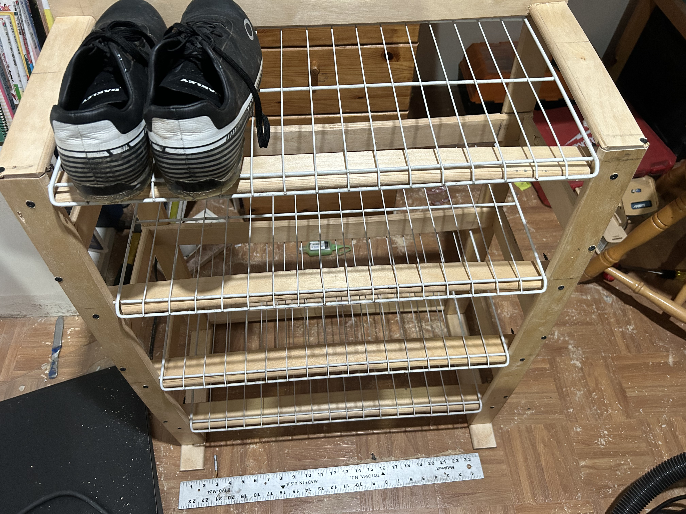
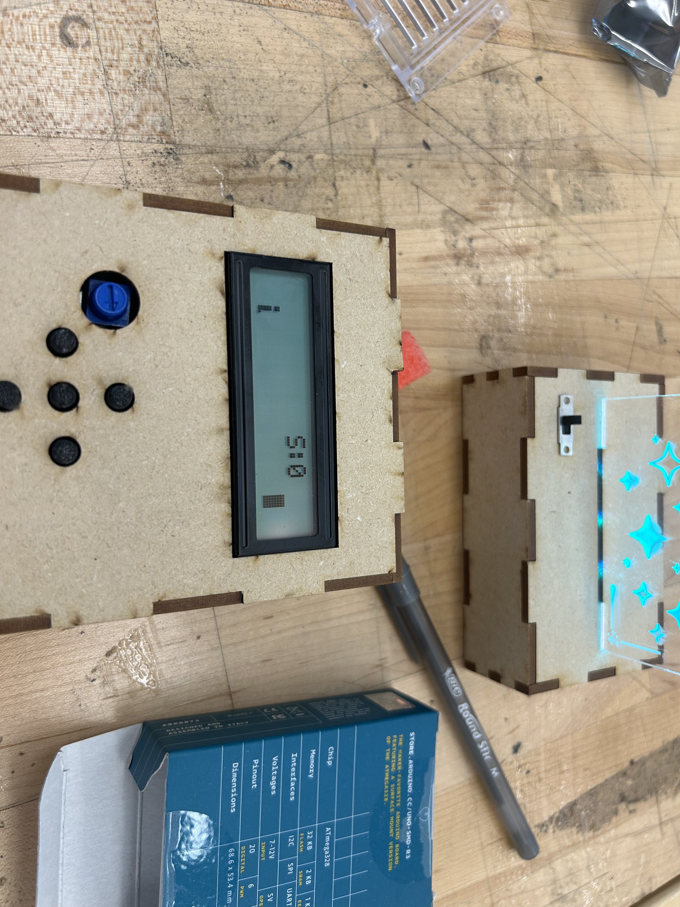

My Projects
Wooden Shoerack
I have made many things out of wood, and this is my most impressive. I made it from IKEA bedslats, as well as old metal grates from my family's old one. This project took around 3-4 days of around 6 hours each. I used mostly my table saw, a drill, a pencil, and my dreams.
Wooden Weapons
I always liked making weapons. They are very cool and are the main thing I am motivated to make. I have a katana, wakazashi, naginata(spear with katana head), kunai, a spear I made for my English class, and a sword I made for my calculus class. They take a bit of time but the results are pretty cool.
Gameboy type stuff
This was a project I had to make for a summer program. They went over how to make it and pretty much it was just like legos, build according to the instructions. Although I did not design it, our instructors taught us how to make it from the ground up